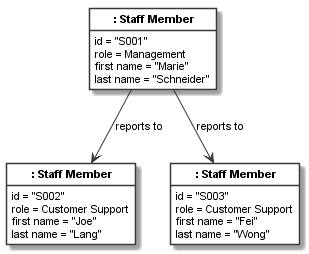
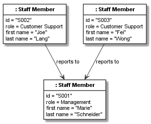
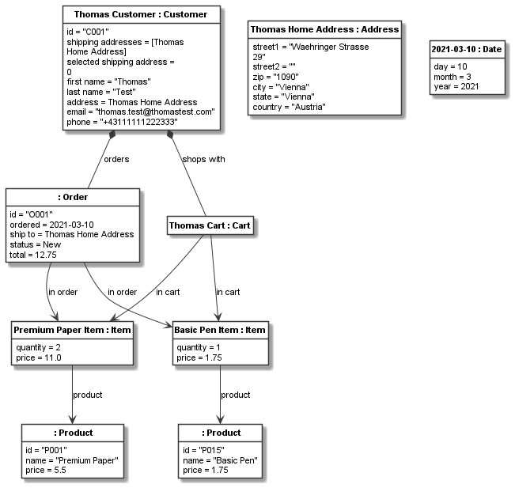

A first object model¶
Defining objects¶
Objects are defined using CObject. An object always needs a class. It can have a name or not.
For example, we can define an address and a customer object based on the previously defined class model
as follows:
thomas_home_address = CObject(address, "Thomas Home Address", values={
"street1": "Waehringer Strasse 29",
"street2": "",
"zip": "1090",
"city": "Vienna",
"state": "Vienna",
"country": "Austria"
})
thomas_customer = CObject(customer, "Thomas Customer", values={
"id": "C001",
"first name": "Thomas",
"last name": "Test",
"address": thomas_home_address,
"email": "thomas.test@thomastest.com",
"phone": "+43111111222333",
"shipping addresses": [thomas_home_address]
})
The values keyword argument is used to define values which are only accepted, if they conform
to the class’ attributes (i.e., name and type must match). The address only contains
string attribute values, whereas the customer
has string values, but also the address value which accepts a CObject of type address, as well as
the shipping address which accepts a list of address objects.
To provide a few more examples, lets define a few unnamed product objects and a named shopping cart object:
basic_pen = CObject(product, values={"id": "P001", "name": "Basic Pen", "price": 1.50})
premium_pen = CObject(product, values={"id": "P001", "name": "Premium Pen", "price": 2.50})
basic_paper = CObject(product, values={"id": "P001", "name": "Basic Paper", "price": 2.75})
premium_paper = CObject(product, values={"id": "P001", "name": "Premium Paper", "price": 5.50})
cart1 = CObject(cart, "Thomas Cart")
Object links¶
To link the cart to its customer and place the products in the shopping cart, we need to link the objects. Objects can be linked if the respective classes have an association. When linking objects, the association definitions are checked for correctness. For example, trying to link three objects to another object based on a 1:1 multiplicity association, yields an exception.
To link the cart to the customer, we need to add a link between them:
cart1.add_links(thomas_customer)
This link is based on the association customer_cart_relation defined before. Because there is only one
association between cart and customer in our object model, Codeable Models can guess the correct
association based on the object types. Alternatively, we could provide the association and/or role name to select the
correct association and/or association direction unambiguously. Lets use those two specification
methods when linking items to their products:
item1 = CObject(item, "Premium Paper Item", values={
"quantity": 2,
"price": 11.00
})
item1.add_links(premium_paper, association=item_product_relation)
item2 = CObject(item, "Basic Pen Item", values={
"quantity": 1,
"price": 1.50
})
item2.add_links(basic_pen, role_name="product")
Here we have defined two items with their values and then linked them to their products, once by specifying the association and once using the role name. In such simple models, using association and role name specifications is often not needed, as the type information alone is enough to guess the correct association. But once models get more complex and evolve, it makes sense to always specify at least one of them, to ensure that adding a new class association in the class model does not break depending object models.
The first argument of add_links can either be a single object or a list. A list is needed for defining links
to more than one object.
add_links on CObject actually is a wrapper for the add_links() function, which takes a dict
of multiple link specifications. With it multiple links can be specified at once. It also supports
association and role name specifications. If those are used, only one kind of link can be specified with one
add_links() call. For example, we can use this function to define the links between items and the cart:
add_links({cart1: [item1, item2]}, role_name="item in cart")
As a last example, lets define an order object along with links to its customer and the items in the order:
order1 = CObject(order, values={
"id": "O001",
"ship to": thomas_home_address,
"total": 12.50
})
order1.add_links(thomas_customer, association=customer_orders_relation)
order1.add_links([item1, item2], association=order_item_relation)
Recursive relations¶
The association staff_reports_to_relation is a recursive relation from the class staff_member to
itself. Consider we define a number of staff members:
manager = CObject(staff_member, values={
"id": "S001",
"first name": "Marie",
"last name": "Schneider",
"role": "Manager"
})
crm1 = CObject(staff_member, values={
"id": "S002",
"first name": "Joe",
"last name": "Lang",
"role": "CRM"
})
crm2 = CObject(staff_member, values={
"id": "S003",
"first name": "Fei",
"last name": "Wong",
"role": "CRM"
})
Here, we need to be careful: If we just use the association for specifying the links, the direction of link specification and association might be identical or not. For example, the following code:
add_links({manager: [crm1, crm2]}, association=staff_reports_to_relation)
would lead to the following model, which is not the indented link direction:
This can be corrected by specifying the links in the correct order given by the association, which can be tedious to look up every time a link is specified and is thus error prone. This issue can be avoid by using the role name for recursive associations which is unambiguous if two different role names have been specified for the recursive association:
add_links({manager: [crm1, crm2]}, role_name="managed")
This yields a correct staff model:
Getting and setting values¶
The values property can get and set the values of an object using the same kind of dict structure used for setting
values via the values keyword argument. For example, the following statement gets
all values of the basic pen product:
print("Values of basic pen: %s" % basic_pen.values)
This would print:
Values of basic pen: {'name': 'Basic Pen', 'price': 1.5, 'id': 'P001'}
With the values setter we can set multiple values at once:
basic_pen.values = {'price': 1.75, 'id': 'P001A'}
We can now inspect the new values:
print("New values of basic pen: %s" % basic_pen.values)
This would print:
New values of basic pen: {'name': 'Basic Pen', 'price': 1.75, 'id': 'P001A'}
We can get single values with get_value() and set single values with set_value(). For example, after the price
change on the product, we might want to update prices in NEW orders and their items. For our model, we could
do this using:
print(f"Old basic pen item price: {item2.get_value('price')!s}, " +
f"old order total: {order1.get_value('total')!s}")
item2.set_value("price", 1.75)
order1.set_value("total", 12.75)
print(f"New basic pen price: {item2.get_value('price')!s}, " +
f"new order total: {order1.get_value('total')!s}")
This would print:
Old basic pen item price: 1.5, old order total: 12.5
New basic pen price: 1.75, new order total: 12.75
Introspecting links¶
A simple way to introspect links is to get the linked CObject
instances. This can be done with the linked property or the get_linked() method. For example, the following:
for linked in item2.linked:
print(repr(linked))
would print something like:
<codeable_models.cobject.CObject object at 0x000001BC7FAC12C8>
<codeable_models.cobject.CObject object at 0x000001BC7FAC1C08>: Thomas Cart
<codeable_models.cobject.CObject object at 0x000001BC7FAC6488>
Please note that we used repr() instead of str() here, as item2 can be linked to order, product, and
cart objects. As the order and product objects in our model have no name, their string representation is empty.
For linked objects it is often useful to use get_linked(**kwargs) where the kwargs can be used to
specify which kinds of linked objects should be returned. Analogous to the link definitions above, we can use
the role_name and association
keyword arguments to filter the links. If for example we want all items linked to order1 we can use:
for linked in order1.get_linked(association=order_item_relation):
print(f"Order Item: {linked!s}")
This would print:
Order Item: Premium Paper Item
Order Item: Basic Pen Item
Each link is represented internally using a CLink object. With the link object we can get more information
than just the linked CObject.
For example, we can find out which source and target objects are used in a link, or on which
association it is based. We can also change the link, e.g. set a label on it.
We can get all links (i.e. CLink objects) of an object using the
links property. For example, the links of item2 can be printed using:
for link in item2.links:
print(str(link))
This will print:
`CLink source = Basic Pen Item -> target = `
`CLink source = Thomas Cart -> target = Basic Pen Item`
`CLink source = -> target = Basic Pen Item`
The string representation of CLink is quite usable for objects with a name.
But same as for linked objects above, if unnamed objects are
used, as in our case, using repr might be more helpful:
for link in item2.links:
print(repr(link))
This will print something like:
`CLink <codeable_models.clink.CLink object at 0x0000017A13615488> source = <codeable_models.cobject.CObject object at 0x0000017A13611FC8>: Basic Pen Item -> target = <codeable_models.cobject.CObject object at 0x0000017A13611208>`
`CLink <codeable_models.clink.CLink object at 0x0000017A13615808> source = <codeable_models.cobject.CObject object at 0x0000017A13611B48>: Thomas Cart -> target = <codeable_models.cobject.CObject object at 0x0000017A13611FC8>: Basic Pen Item`
`CLink <codeable_models.clink.CLink object at 0x0000017A13615D88> source = <codeable_models.cobject.CObject object at 0x0000017A13615388> -> target = <codeable_models.cobject.CObject object at 0x0000017A13611FC8>: Basic Pen Item`
To get a fully readable representation of the links, in case of unnamed objects, we might better
print some attribute values of the source and target objects, stored in CLink, that identify them.
For example, above the order source and the product target
do not have a name. With instance_of() we can find out whether an object is
an instance of CClass order or target and in those cases
use other attribute values to identify them:
for link in item2.links:
source_str = str(link.source)
if link.source.instance_of(order):
source_str = "Order " + link.source.get_value("id")
target_str = str(link.target)
if link.target.instance_of(product):
target_str = "Product " + link.target.get_value("name")
print(f"Link: {source_str} -> {target_str}")
This would print:
Link: Basic Pen Item -> Product Basic Pen
Link: Thomas Cart -> Basic Pen Item
Link: Order O001 -> Basic Pen Item
Sometimes we only want the links of a specific association, e.g. only the links from an order to its items, but
no other links defined for the order. This can be achieved with get_links_for_association(association):
for link in order1.get_links_for_association(order_item_relation):
print(f"Link: Order {link.source.get_value('id')} -> {link.target!s}")
This would print:
Link: Order O001 -> Premium Paper Item
Link: Order O001 -> Basic Pen Item
Resulting model¶
We can use the the Plant UML renderer to draw the resulting model. The result would be:
Please note that here we must use the object model renderer, not the class model renderer
to generate the models. It is called via the generate_object_models()
method and otherwise used in the same way as the class model renderer used before.
This image and the staff image above have been rendered using the following code:
shopping_instance1_order_model = CBundle("shopping_instance1_order_model",
elements=order1.get_connected_elements() +
[thomas_home_address, today])
shopping_instance1_staff_model = CBundle("shopping_instance1_staff_model",
elements=manager.get_connected_elements())
generator = PlantUMLGenerator()
generator.generate_object_models("shopping_instance1",
[shopping_instance1_order_model,
{"render_association_names_when_no_label_is_given": True},
shopping_instance1_staff_model,
{"render_association_names_when_no_label_is_given": True}])
Links can have optional label specifications, to support specifying a link-specific label.
In addition to that, it
can be useful to turn the rendering option render_association_names_when_no_label_is_given on. It adds the
association labels to links that have no label (done for all figures in this chapter). This can be a useful
option, if the meaning of the link arrows might be unclear.
The full code of the examples in this tutorial can be found in the sample Shopping Instances Model 1.